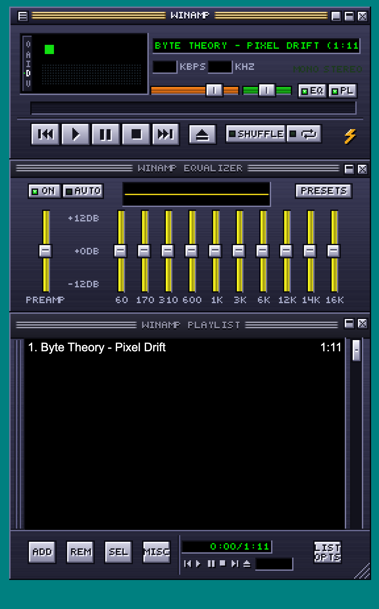
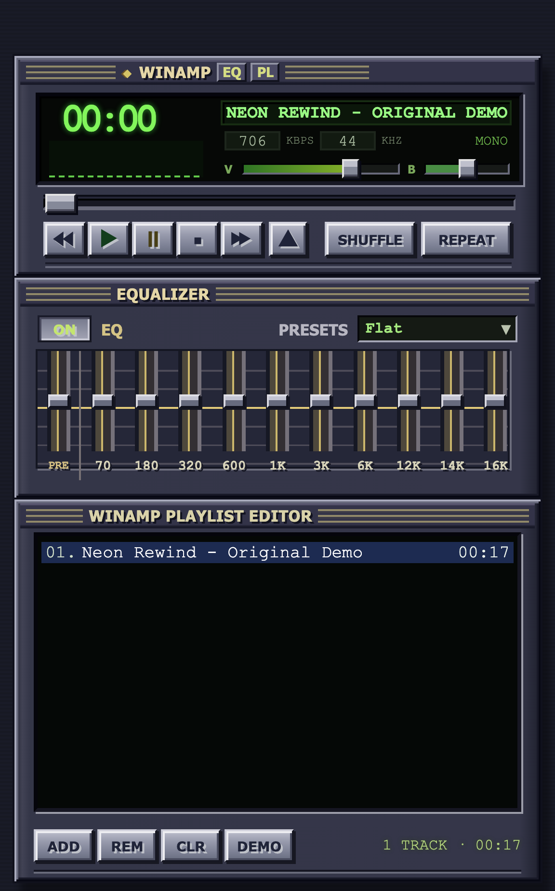
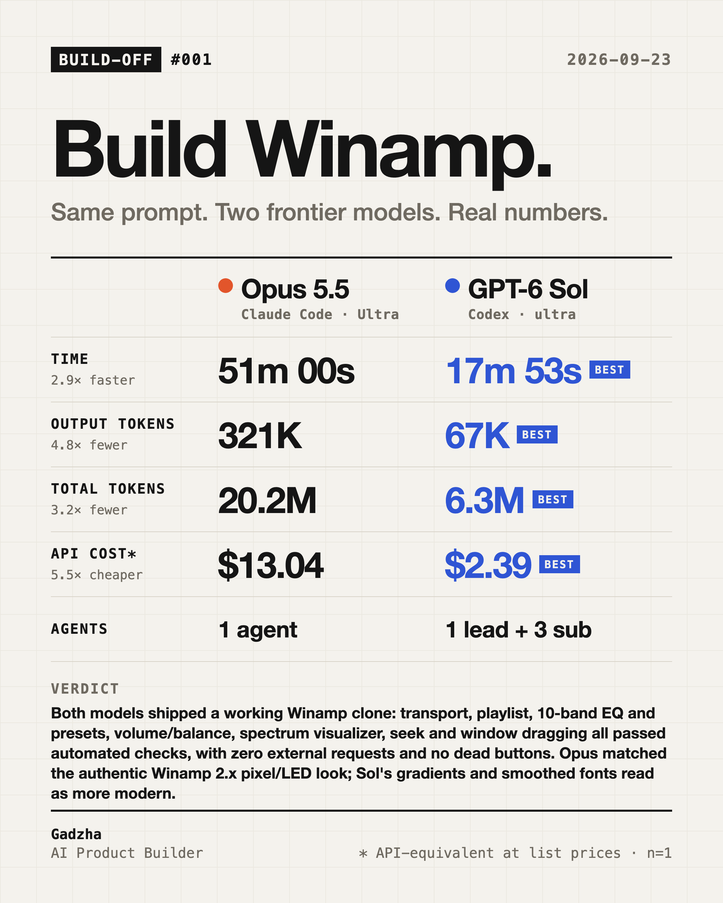

Opus 5.5
Claude Code · Ultra

- Time
- 51m 00s
- Output tokens
- 321K
- API cost*
- $13.04
Winamp clone with an authentic 2.x pixel/LED look; every check passed.
Open Opus 5.5's build ↗
Same prompt. Two frontier models. Real numbers. Both builds are live below — exactly as each model produced them. Click around.


* API-equivalent at list prices, not what was actually paid. Time, tokens and cost are pulled from the session logs.
Checklist taken straight from the prompt, fixed before scoring, 1 item dropped after scoring ("Embedded track plays on open": the prompt never asked for autoplay). ✓ works · ~ partly · ✗ doesn't work — no points, no totals: weigh the items yourself.
| Opus 5.5 | GPT-6 Sol | |
|---|---|---|
| Three docked sections: player → EQ → playlist | ✓ | ✓ |
| Winamp 2.x look: pixels, green LED, no modern styling | ✓ | ~ |
| Transport buttons work | ✓ | ✓ |
| Loads local audio files | ✓ | ✓ |
| Timer + seek | ✓ | ✓ |
| Volume + balance | ✓ | ✓ |
| Shuffle + repeat | ✓ | ✓ |
| Playlist: add / remove / double-click to play | ✓ | ✓ |
| 10-band EQ + preamp audibly works | ✓ | ✓ |
| EQ presets | ✓ | ✓ |
| Spectrum visualizer reacts to audio | ✓ | ✓ |
| Window dragging | ✓ | ✓ |
| No external requests, no dead buttons | ✓ | ✓ |
Both models shipped a working Winamp clone: transport, playlist, 10-band EQ and presets, volume/balance, spectrum visualizer, seek and window dragging all passed automated checks, with zero external requests and no dead buttons. Opus matched the authentic Winamp 2.x pixel/LED look; Sol's gradients and smoothed fonts read as more modern.
rebuild classic Winamp 2.x as a single HTML file — player, 10-band EQ, playlist, visualizer, draggable window, no frameworks, no external requests
Create one self-contained HTML file — the closest possible visual and functional clone of classic Winamp 2.x, based on the attached reference: three docked sections (Main Player → Equalizer → Playlist), a dark blue/graphite metallic interface, a green LED display and a pixel aesthetic with no modern styling. Implement working Play/Pause/Stop/Next/Prev/Eject with local audio file loading, a timer, seek, volume, balance, shuffle/repeat, a playlist with add/remove and double-click to play, a 10-band EQ + preamp with Rock/Pop/Jazz/Classical/Flat presets via the Web Audio API, a spectrum visualizer via Canvas + AnalyserNode, window dragging, and an embedded royalty-free track in base64. Pure HTML/CSS/JS only: no frameworks, CDNs or external requests, no stubs or decorative non-working elements. Everything must work the moment the HTML file is opened in a browser.
one task, one run each, Sept 23, 2026. And "Ultra" isn’t the same knob in both tools: in Claude Code it’s xhigh effort plus agent orchestration, in Codex it’s the top reasoning effort. A field test, not a benchmark.
